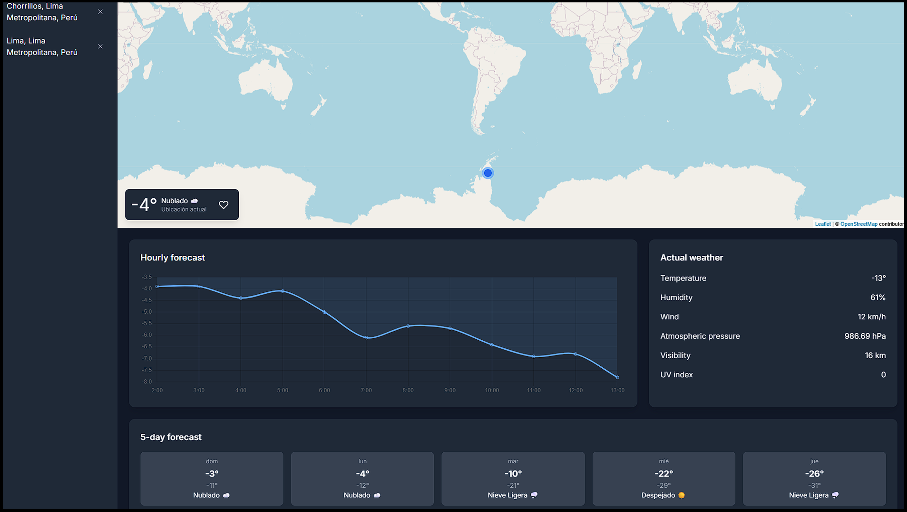
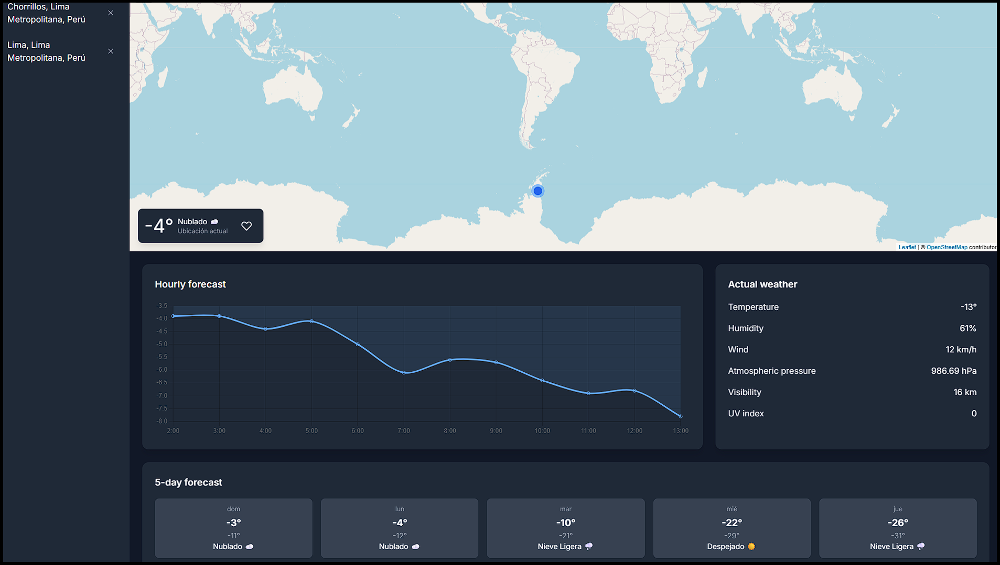

AutoPlay


AutoPlay is a sophisticated desktop automation tool built with C# and WPF, designed for the low-level recording and replaying of complex user keyboard and mouse actions. It features a secure, modern backend powered by Supabase for user authentication (JWT), data persistence, and subscription management. Key technical achievements include seamless integration with the PayPal API, including webhooks for real-time event handling of Premium subscriptions, serverless backend logic using TypeScript-based Edge Functions, and robust security practices such as encrypted local storage for auto-login tokens. The application's architecture demonstrates advanced capabilities in system-level event handling, API integration, and software protection through code obfuscation.
View ProjectGlobalWeather
 

This project is a comprehensive, single-page weather application designed to provide users with detailed, real-time meteorological data for any location worldwide. It integrates multiple APIs (Tomorrow.io, Weatherbit.io, OpenCage, Wikipedia) to provide a rich experience, including real-time, historical, and forecast data. It features client-side caching, an interactive map with Leaflet.js, dynamic dark/light theming, and responsive data visualizations with Chart.js.
View ProjectGallery


This project is an advanced photo gallery and editor that aggregates images from multiple sources, including the Pexels, Pixabay, and Unsplash APIs, alongside local user uploads. It features a powerful client-side editor, allowing users to apply various filters, use presets, and perform precise cropping with Cropper.js. The application is built with modern JavaScript and features a responsive masonry layout, a dynamic dark theme, and a seamless interface for searching, viewing, and manipulating images.
View ProjectPost It


A dynamic social platform built with PHP and MySQL, featuring secure user authentication and an interactive page where members can share posts, images, and engage with others through comments and likes. The system supports both text and image comments, encouraging richer interactions. Designed with an intuitive interface and responsive layout, it provides a seamless experience across devices. This project is fully deployed on InfinityFree, making it accessible for real-world testing and demonstration.
View ProjectSurvey with websockets


An interactive survey application developed in Java, leveraging WebSockets to deliver real-time voting result updates. Users can create custom surveys with tailored questions and multiple-choice options, then share them via a unique voting link. Upon completion, two separate links are generated — one for sharing the survey for participation, and another for live result visualization. This ensures instant feedback and engagement. The system is deployed on Render, allowing smooth and scalable performance for simultaneous participants.
View ProjectPDF editor


A lightweight yet powerful PDF editing tool built with Python and Flask, enabling users to insert text and images directly into PDF files. It supports multi-page PDFs, allowing precise element placement on any page while preserving the original document’s layout. The interface is designed for simplicity, so even non-technical users can easily make edits. Fully deployed on PythonAnywhere, this project demonstrates efficient file handling, image processing, and PDF manipulation in a web environment.
View Project